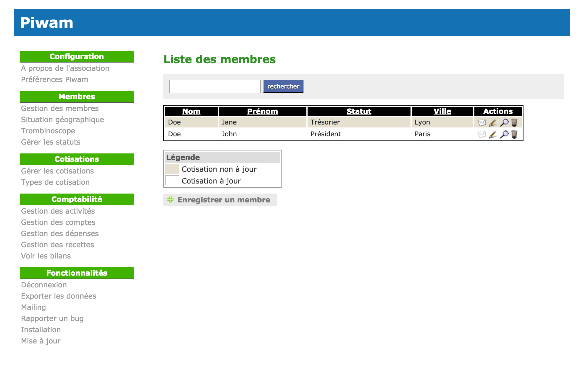

What is that ?
Piwam is a web application that allows you to easily manage an association. It uses Ruby on Rails technology.

What can I manage with Piwam?
Piwam allows you to manage the activities of an association and to edit various accounting reports:
- members
- contributions
- income and expenses
- activities
Installation
bundle install
rails db:setup
rails sRequires Ruby 3.0.2 or higher and MySQL.